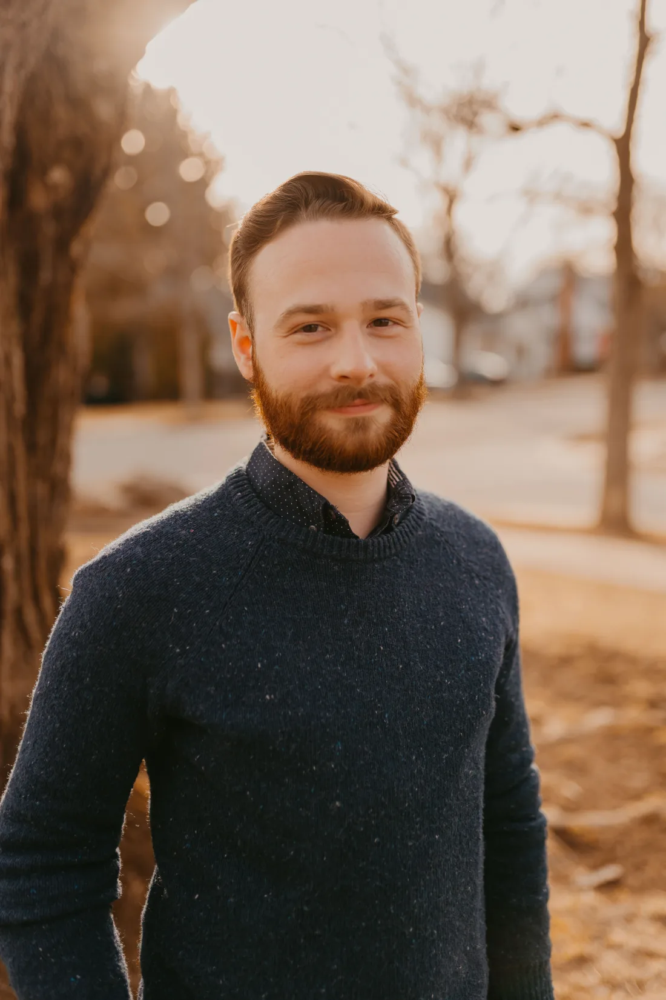
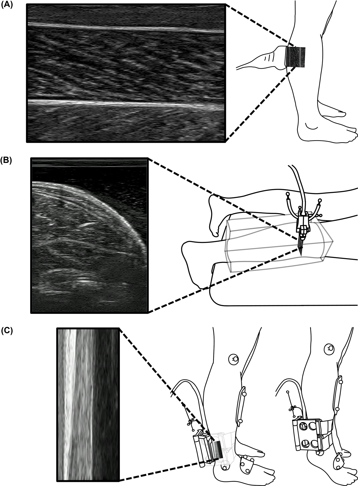
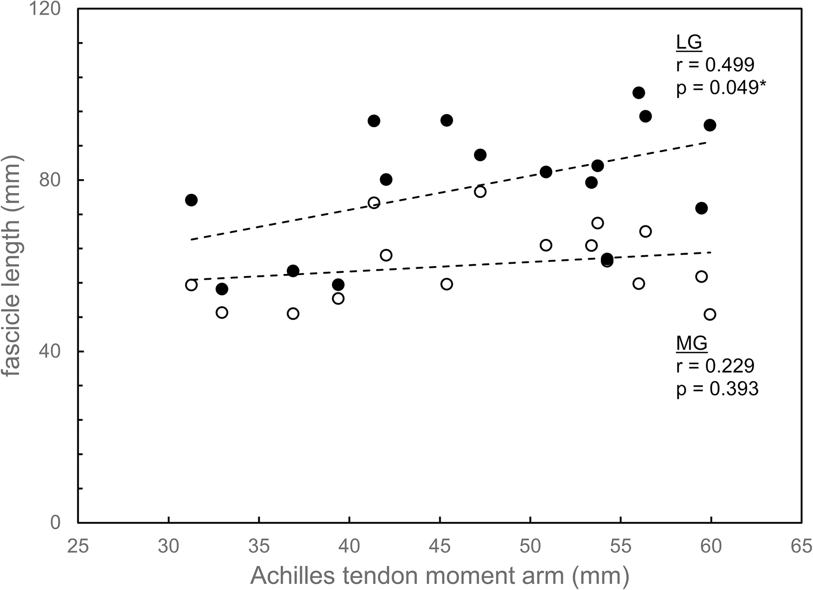
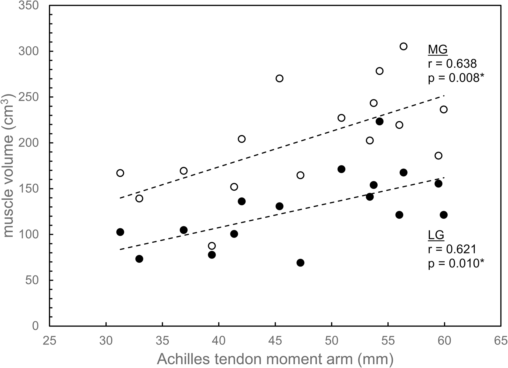
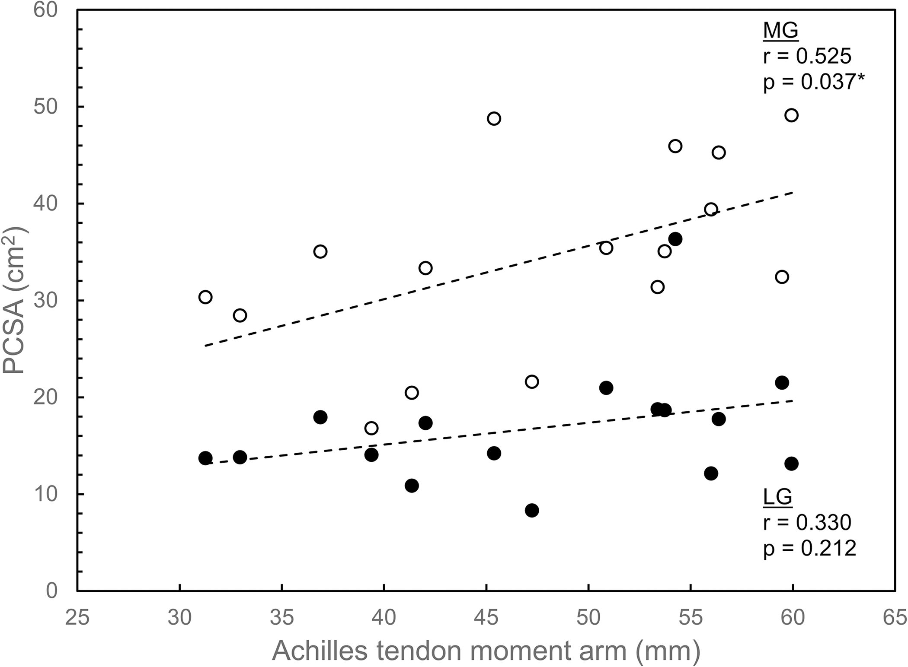
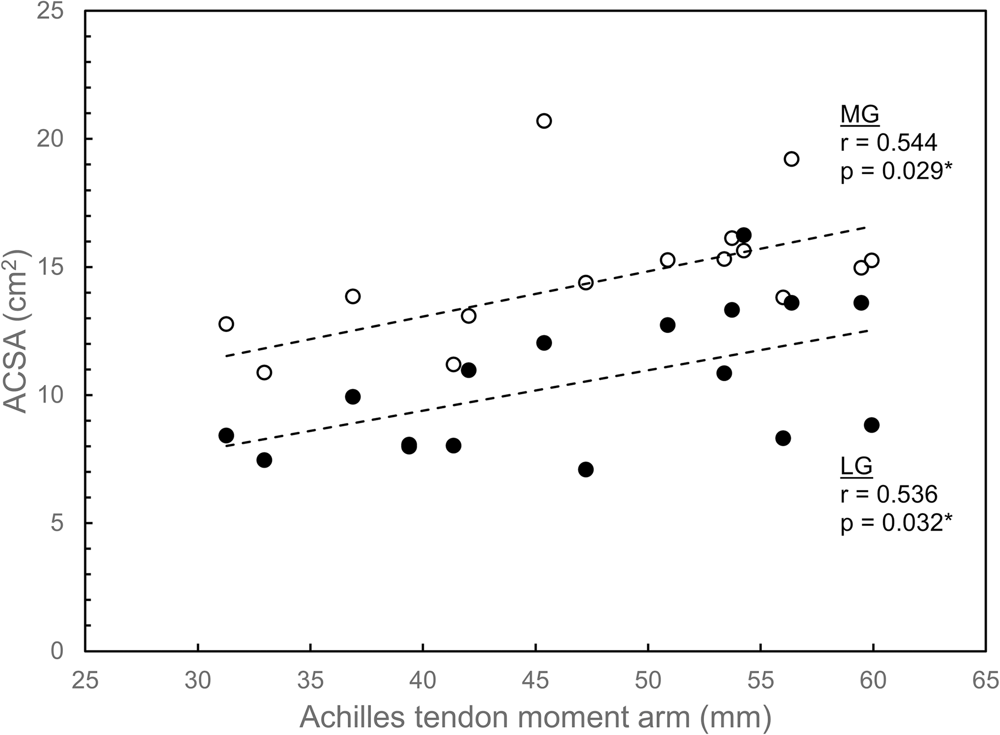

Plantarflexor architecture and Achilles tendon moment arm
My MS thesis examined how lateral and medial gastrocnemius architecture scales with ankle leverage in healthy adults.
Postdoctoral research associate / University of Utah
Nullius in verba.

Research
I study how muscle mechanics, gait mechanics, joint gear ratios, and vascular physiology influence locomotor function across healthy and clinical populations.
Projects
My MS thesis examined how lateral and medial gastrocnemius architecture scales with ankle leverage in healthy adults.
My doctoral work studied daily calf stretching in peripheral artery disease and developed a device to isolate foot-ankle leverage effects in basic studies across healthy and clinical populations.
Current work examines how limb-level gait mechanics and blood-flow regulation interact in people with unilateral transtibial amputation.
Highlighted work
Relationships between Achilles tendon moment arm and plantarflexor architecture across healthy adults.





Faux-Dugan, L., & Piazza, S. J. (2024). Correlations between Achilles tendon moment arm and plantarflexor muscle architecture variables. PLOS ONE, 19(8), e0309406.
Connect